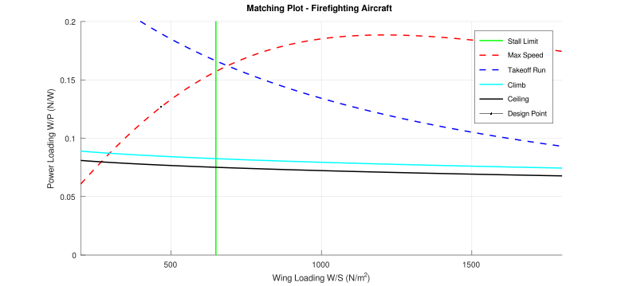
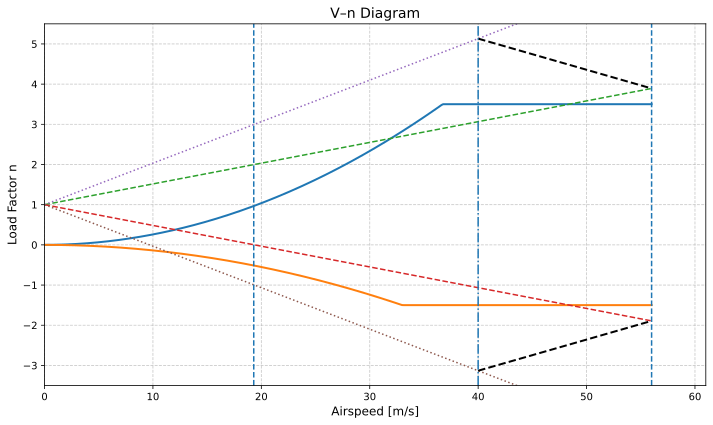
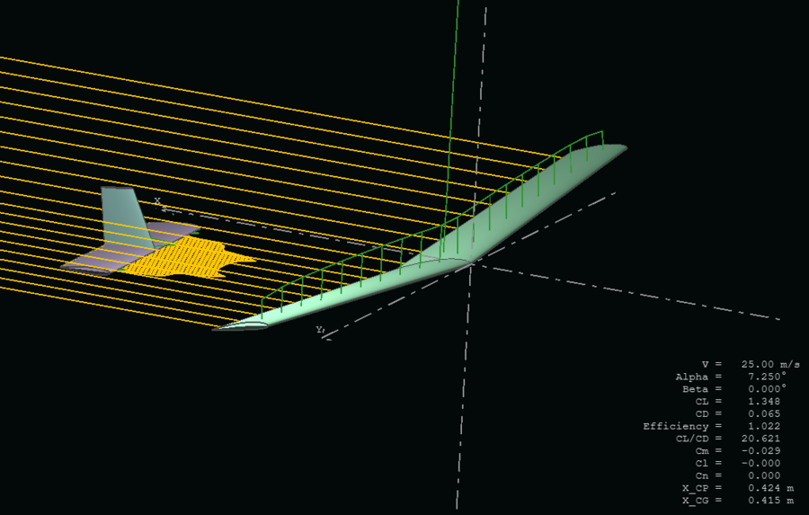
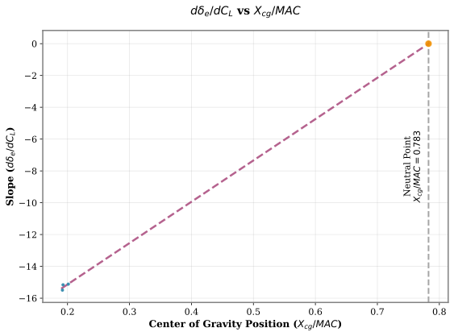
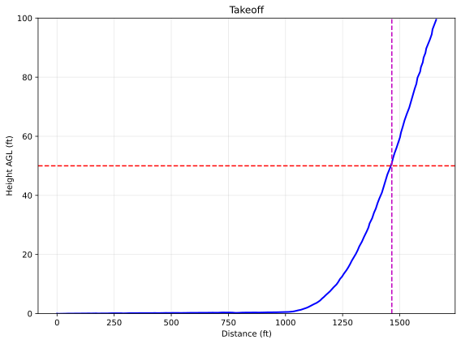
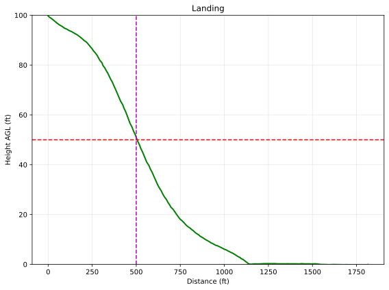
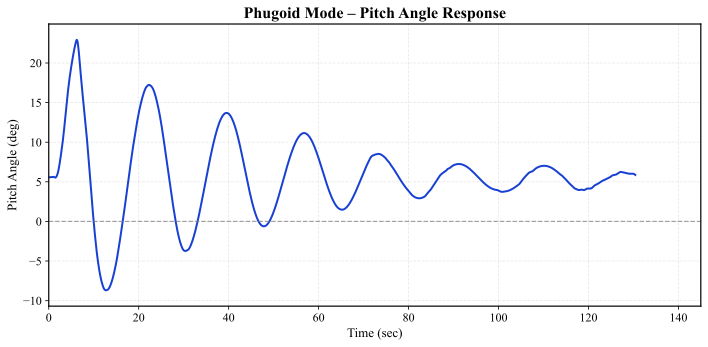
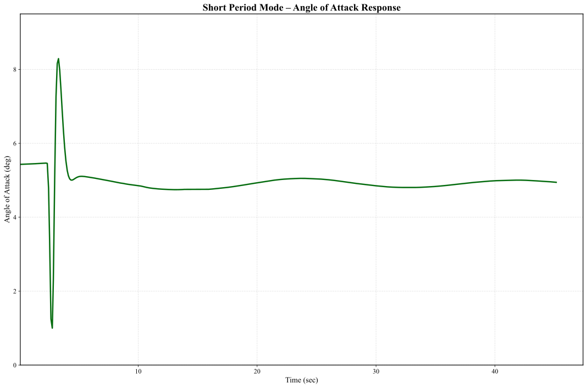
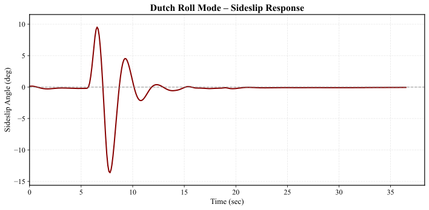
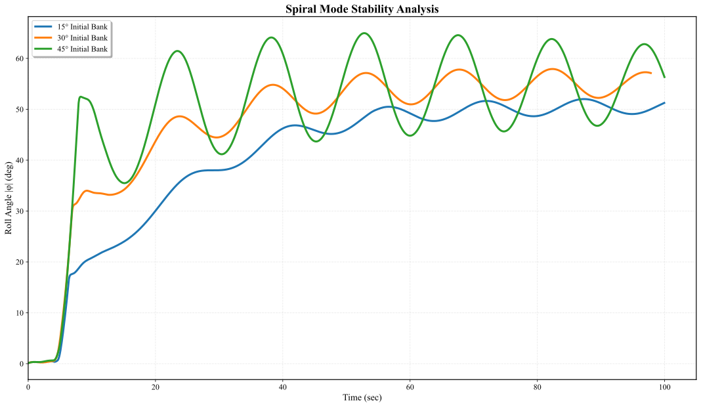

Nimbus.
An electric agricultural aircraft designed from the mission backwards.
A fixed-wing crop-dusting UAV concept for medium-sized farms, taken from sizing constraints through aerodynamic modeling and digital flight testing.

Start with the field, then size the aircraft.
Nimbus was developed as an autonomous, battery-powered crop duster. Its design brief called for a 200 L hopper, 35 minutes of endurance, a 300 m takeoff target, and 35 m/s cruise speed. The airframe was sized around those requirements, then checked in aerodynamic software and a flight simulator.
These are brief requirements, not demonstrated field performance. Results from the digital flight test are shown below.
A conventional layout shaped by tight constraints.
A power-loading versus wing-loading matching plot balanced stall, climb, cruise, and takeoff requirements. The chosen point was about 40.6 kg/m² wing loading. A maneuver-and-gust V–n envelope provided a structural check.
High-mounted NACA 2412; 12 m span, 12.569 m² area, 11.4 aspect ratio, 4° dihedral.
NACA 0012 horizontal stabilizer and swept NACA 2412 vertical stabilizer.
One motor on each wing, leaving the fuselage centerline available for the hopper.
Fixed tricycle undercarriage and a 576 kg maximum takeoff weight in the design estimate.


Aerodynamic estimates met a simulated flight test.
XFLR5 supplied vortex-lattice lift and drag estimates and a neutral-point prediction. A matching aircraft built in Plane Maker was then flown in X-Plane 12 to study trim, stability, handling, climb, and field performance. OpenVSP was also part of the team's design toolset.
The flight-data estimate and XFLR5 result differed by roughly 3%. Both are modeling and simulation results, not physical flight-test measurements.


The aircraft flew in simulation. The runway target needs more work.
Above the 35 m/s design target in simulation.
Modified Cooper–Harper scale; moderate pilot compensation.
About 160 m longer than the 300 m target.
Measured in the digital flight test.
Phugoid, short-period, Dutch-roll, and spiral responses all converged in the simulated tests. The takeoff-distance gap is the next design problem: revisit power and wing loading, then test the revised configuration against the same mission brief.


Inside the flight-test analysis
Selected plots from the Nimbus design and flight-dynamics work.




Nimbus is a concept backed by analysis, with a clear next iteration.
Completed in 2026 for the Aircraft Design and Flight Dynamics courses at IOE Pulchowk Campus with Amogh Adhikari, Toran Bahadur Niroula, and Yogesh Dhami. The team’s design poster and a fuller technical account are available below.